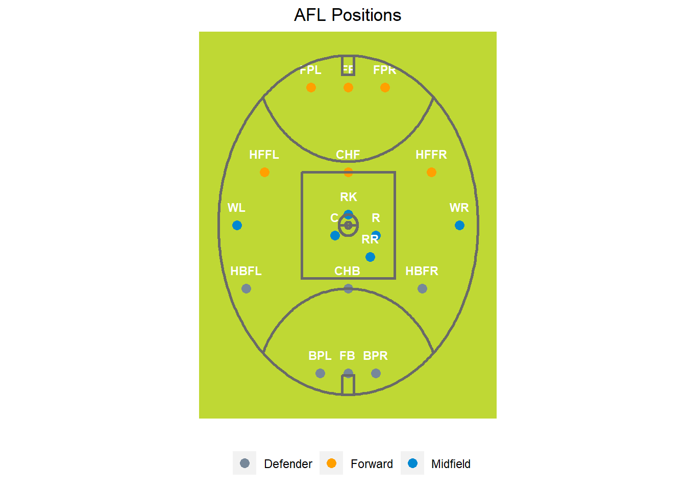
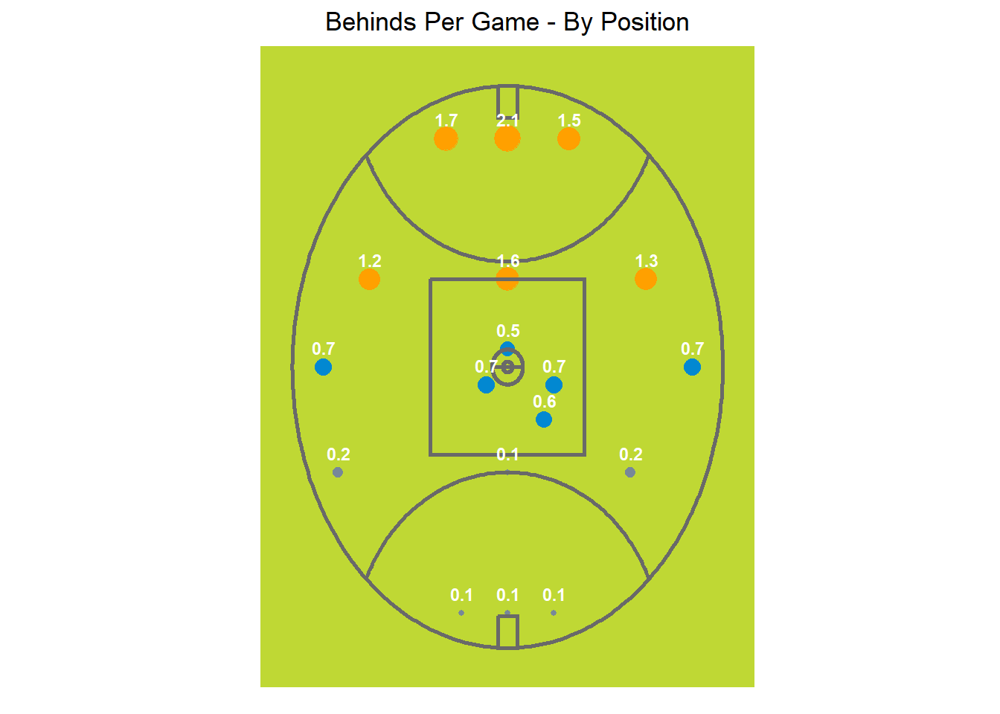

Learning about AFL positional play through statistics
Please note the data I use in this analysis is from the 2022 season courtesy of the fitzRoy package. Many of the definitions and information come thanks to Wikipedia.
The goal of this post is going to be to help an absolute novice to the sport (me) understand some of the basic counting statistics in the game and how certain positions do in those counting statistics. For instance, does a Ruck Rover typically lead the team in goals or a Full Forward? How many tackles should we expect from our full-back? This post will help answer these basic questions by looking at data from the 2022 season and plotting the per game major statistics for each position.
Before diving into the data, let’s start with the basics of what I know to this point. Each team has 22 players, 18 of which are on the field at each time. An AFL field takes an oval shape and according to Wikipedia for professional levels the area of play is “typically between 135–185 metres (148–202 yd) long goal-to-goal and 110–155 metres (120–170 yd) wide wing-to-wing”. So we have a massive playing area much larger than a soccer pitch of NFL field on which 18 players per team are attempting to get the ball through the goal posts at either end. Unlike football (soccer) there doesn’t seem to be any concept of offsides, so these players can be really anywhere on the field during the course of play. This freedom and size seems to be really intriguing from a strategic perspective as one could configure their play in a variety of ways.
Let’s take a look at what positions we have in the data. It seems that we have 20 unique position codes using abbreviations. Below is a table that gives an example of what we see. Given I don’t have the knowledge to interpret these abbreviations I will have to go outside the data set to try and make some type of key to the full name for each position.
afl_stats<-afl_stats%>%rename(position = player.player.position)afl_stats %>%select(position) %>%unique() %>%gt() %>%tab_header(title ="AFL Player Position Abbreviations" ) %>%cols_label(position =md("**Position**") ) %>% gtExtras::gt_theme_espn()
AFL Player Position Abbreviations
Position
SUB
INT
HBFR
FF
FPL
BPL
WL
WR
FB
HFFR
RR
FPR
BPR
HFFL
HBFL
C
R
CHB
CHF
RK
Let’s breakdown these positions similar to how we’d break down football (soccer) positions on the pitch; attack, midfield and defense. In attack we have 6 players, midfield we have 6 players and defense we have 6 players. The position names are listed in the table and the associated graph shows roughly where they play on the oval.
AFL Position Names and Abbreviations
Position Abbreviation
Position Name
Position Type
SUB
Substitute
Bench
INT
Interchange
Bench
HBFR
Half-Back Flank Right
Defender
BPL
Back Pocket Left
Defender
FB
Full Back
Defender
BPR
Back Pocket Right
Defender
HBFL
Half-Back Flank Left
Defender
CHB
Center Half Back
Defender
FF
Full Forward
Forward
FPL
Forward Pocket Left
Forward
HFFR
Half-Forward Flank
Forward
FPR
Forward Pocket Right
Forward
HFFL
Half-Forward Flank Left
Forward
CHF
Center Half Forward
Forward
WL
Left Wing
Midfield
WR
Right Wing
Midfield
RR
Ruck Rover
Midfield
C
Center
Midfield
R
Rover
Midfield
RK
Ruckman
Midfield

We can probably make some assumptions about which players might be higher in say, goals than others. Forwards are more likely than defensive players to excel in those types of stats.
An Introduction to Basic Statistics in the AFL
Before looking at the statistics broken out by position it is important for us to define some of these terms to understand what each counting statistics refers to. I am only going to pick out a few basic statistics at the moment that show up on most AFL boxscores, but will delve deeper into other statistics at a later time. To start, let’s take a look at scoring and I think this image from rookie road. Does a great job of illustrating how scoring works.
Goals: This is when a player kicks the ball between the two center goal post and it is NOT touched by another player or touches either goalpost.
Behinds: A behind, worth 1 point, is scored when the ball passes between a goal post and a behind post at any height, or if the ball hits a goal post, or if any player sends the ball between the goal posts by touching it with any part of the body other than a foot. A behind is also awarded to the attacking team if the ball touches any part of an opposition player, including a foot, before passing between the goal posts
Marks: A mark is a catch of the kicked ball which earns the catching player a free kick. The catch must be clearly taken and the umpire has to deem it to be a clean position. Marks can be some of the cooler plays from my perspective as someone new to the sport. The best way I can describe it in NFL terms is as if a run play magically turned into a punt which turned into a hail mary scenario with a jump ball between the target and defenders. You can mark the ball after:
A pass is completed that is longer than 10 meters
Catching it in the air without anyone else touching it
Catch the ball without it hitting the ground.
Disposals: This is really an legally made pass either by a kick or handpass. It is how you get rid of the ball. It can approximate possession.
Handballs: Handball or handpass are disposals by hand. This is done by holding the ball in one hand and punching it with the other. It is a certain type of pass.
Kicks: Disposals by foot. Any kick type pass made by a player
Tackles: Pretty straight forward, but the number of tackles recorded
Per Game Stats
Goals Per Game
The graph paints a pretty self-explanatory and expected picture about which positions score more goals than others. Forward positions dominate the goal scoring with the full forward a full goal over the next highest position at 3.69 average goals per game. Scoring from a defenders position is an absolute rarity with the the half-back flanks averaging 0.28 goals a game, but full backs put up a paltry 0.07 goals per game.
Behinds Per Game
Behinds are very similar to goals in how they are scored so we’d expect a strong correlation with goals. We can see that from a position standpoint, the story plays out the same as goals.

Tackles Per Game
Tackles per game are led by the center midfield positions of Rover, Ruck Rover, and Center. While from an American perspective, one may have assumed the more defensive positions would lead in this state, it make sense having watched a few games how much of the hectic position play occurs in the midfield where teams are contesting for position. An attempted goal may take place 40 or 50 meters out meaning defenders may be playing much deeper and have less opportunities to make tackles.
Disposals Per Game
Disposals are essentially “the pass” of the AFL and can be done either by hand (handballs) or foot (kicks) which I break out below. Once again, a majority your disposals come from those central midfield positions followed by some of the wing positions. Forwards tend to be much lower in these stats. This plays out similarly for handballs and kicks, though the position of Ruckman is quite interesting. we see Ruckman put out about 12 handballs per game, but come in the lowest for kicks at 14.4
Marks per Game
The position with the most marks on average in a game is Center Half Back with the Full Back and Half-Back Flanks on either side following behind Center Half Back. So a Mark is something it seems a defender does more often than other positions. That said, the distribution isn’t much difference from the max down to the min in terms of spread.
Final Summary
library(gt)library(dplyr)library(ggsci)library(scales)# Assuming afl_pos_stats is your dataframe# Update column names for readabilityafl_pos_stats <- afl_pos_stats %>%rename_with(~gsub("\\.", " ", .x), .cols =everything()) %>%rename_with(~gsub("_", " ", .x), .cols =everything())# Define a blue color gradient function using ggsci's paletteblue_gradient <- scales::col_numeric(pal =pal_npg("nrc")(100), domain =NULL)# Generate the GT tableafl_table <- afl_pos_stats %>%select(`Position Name`, `Position Type`, position, `goals per game`, `behinds per game`, `disposals per game`, `handballs per game`, `kicks per game`, `tackles per game`, `marks per game`) %>%gt() %>%tab_header(title ="AFL Stats Per Game Averages - By Position" ) %>%cols_label(`Position Name`="Position Name",`Position Type`="Position Type",position ="Position",`goals per game`="Goals Per Game",`behinds per game`="Behinds Per Game",`disposals per game`="Disposals Per Game",`handballs per game`="Handballs Per Game",`kicks per game`="Kicks Per Game",`tackles per game`="Tackles Per Game",`marks per game`="Marks Per Game" ) %>%tab_style(style =cell_text(weight ="bold"),locations =cells_column_labels(columns =TRUE) ) %>%data_color(columns =vars(`goals per game`, `behinds per game`, `disposals per game`, `handballs per game`, `kicks per game`, `tackles per game`, `marks per game`),colors = blue_gradient )# Print the tableprint(afl_table)